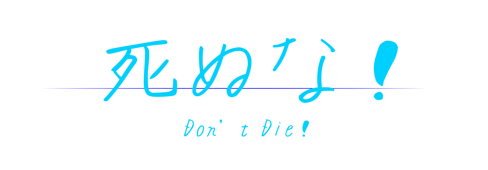
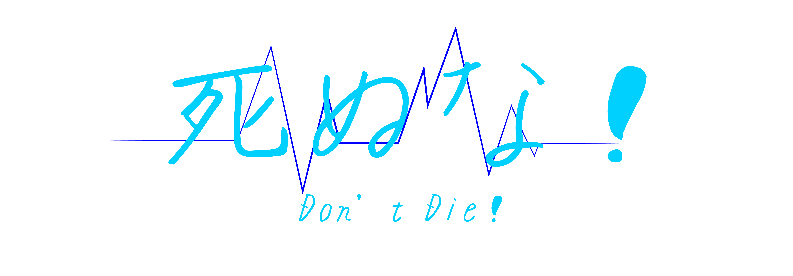
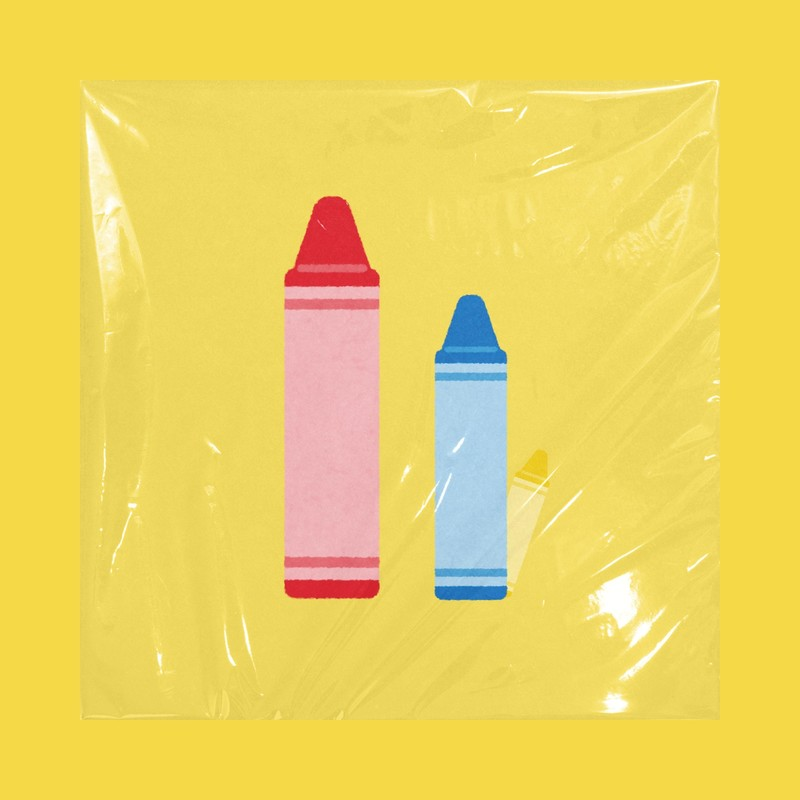

こっちのけんと(Kocchi no Kento)
E Minor / 110.053BPM
こっちのけんとは、1996年生まれの大阪府出身。大学進学を機に上京し、学生時代にはアカペラグループ『ケミカルテット』で全国大会2年連続優勝した経験を持つ。卒業後は就職し、社会人として働きながら本格的に音楽活動をスタートさせた。「真面目にふざける」をモットーに活動し、数々の楽曲がSNSで話題を呼んでいる注目のアーティストだ。3人兄弟の次男で、兄は俳優の菅田将暉、弟には俳優デビューを果たした菅生新樹がいる。
作詞と作曲も手がけるこっちのけんと。作詞を始めたのは、兄・菅田将暉へ贈ったバースデーソングがきっかけだったと明かした。「作詞を始める前、オリジナルでアカペラソングを作ったらどうなるんだろうと思ったんです。ゴスペラーズみたいなことをしたいなと思っていたんですけど、やってみると作詞が難しすぎて……。そこで、最初は兄に向けた誕生日プレゼントとして曲を作ろうと、お手紙みたいな感じで作詞をしたのがきっかけでしたね。自分が思っている感情を文字にするのは難しいんですけど、お手紙を書く感覚だとすんなりできたんです」（こっちのけんと）
SNSで大きな反響があった曲『死ぬな!』はインパクトのあるタイトルがつけられているが、どのような思いが込められているのか尋ねてみた。「辛いとき、冗談でも『死んでしまいたい』と思ったことが皆さんにもあると思うんですけど、そんなときに力づくでも止めたいなと。冗談でも良くないよという気持ちで、現世側というかこっち側へ引っ張ろうという思いで作りました」僕は”良くない事”だと考えているのですが、 『死にたい』と口にする人が多いと感じます。冗談でも言っては いけない事だとも思います。それでも死にたいと考えてしまう人 へ強引に『死ぬな!』と伝えたくて、この曲を作りました。 簡単な言葉にしますが、僕も過去に『死にたい』と考えていまし た。 でも自分を殺す強さもないので、偶然事故にあえるために努力を していたこともあります。今考えるとゾッとします。 そんな人たちに『この先、生きていたら良い事が待ってる』 なんて確証のない言葉で生きる理由を作るよりも、強引に現 世に引っ張る方が助けられるのではないかと思い『死ぬ な!』というタイトルにしました。 この曲を聴いてどうこう変わる事は無いかも知れませんが、 少しでも自分の中の『死にたい自分』と対話してくだされば 幸いです。 まずは『死にたい』と言うよりも、『願い事を3つ』考えてほしいです。 （こっちのけんと）


Kento Kocchi, born in 1996 in Osaka, moved to Tokyo for university and during his student years, he experienced consecutive victories at the national competition as part of the a cappella group "Chemical Quartet." After graduating and entering the workforce, he officially started his music career. Operating under the motto "seriously fooling around," he has gained attention as an emerging artist with several of his songs becoming popular on social media. He is the second of three siblings, with his elder brother being the actor Masaki Suda and his younger brother, Shinki Suga, having made his debut as an actor.
Kento Kocchi is involved in both lyric writing and composing. He revealed that he started writing lyrics after creating a birthday song for his brother, Masaki Suda. "Before I started writing lyrics, I wondered what would happen if I created an original a cappella song. I wanted to do something like the Gospellers, but writing lyrics turned out to be too difficult... So, initially, I decided to create a song as a birthday present for my brother. It was like writing a letter, and that's how I got into lyric writing. It's difficult to express the emotions I have in words, but it was easier when I approached it like writing a letter," said Kento Kocchi.
The song "Shinu na! (Don't Die!)" gained significant traction on social media, and it has an impactful title. When asked about the thoughts behind it, Kocchi explained, "During tough times, everyone might have had thoughts like 'I wish I were dead,' even if it's just a joke. At such times, I wanted to forcefully stop those thoughts. It's a feeling of saying it's not good, even if it's a joke, and wanting to pull them towards the side of the living, towards this world." Kocchi expressed concern about the commonality of people saying "I want to die," even in jest. While acknowledging that it's not something to joke about, he emphasized the importance of delivering a forceful message of "Don't die!" to those who might entertain such thoughts. He shared that he, too, had considered the idea of wanting to die in the past. Reflecting on his past thoughts, he found it chilling. He created the song with the title "Don't Die!" believing that forcefully pulling someone towards the present world might be more helpful than creating reasons to live based on uncertain words like "good things are waiting for you in the future." He concluded by expressing the hope that, while listening to the song might not change everything, if it encourages even a bit of dialogue with the "I want to die" aspect within oneself, he would be grateful. He encouraged people to think of "three wishes" before saying "I want to die."